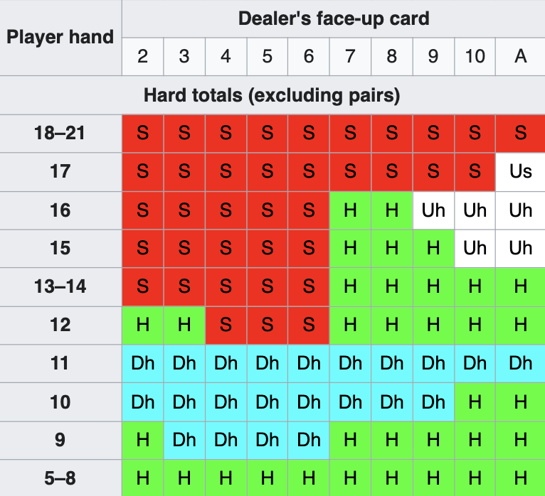
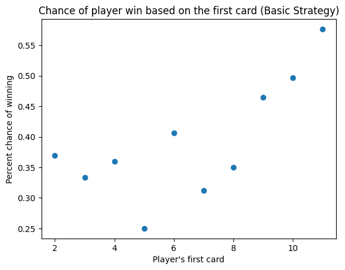
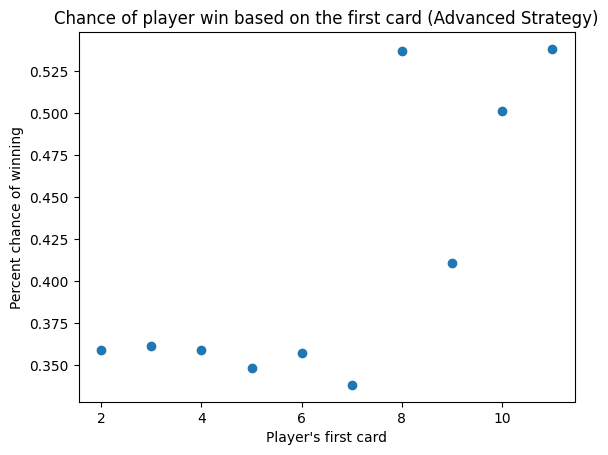
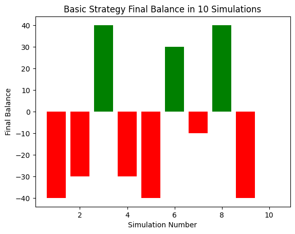
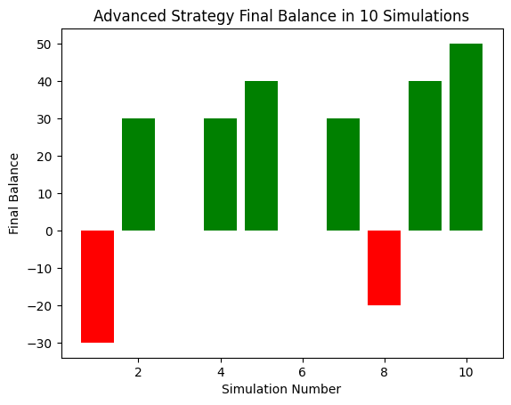
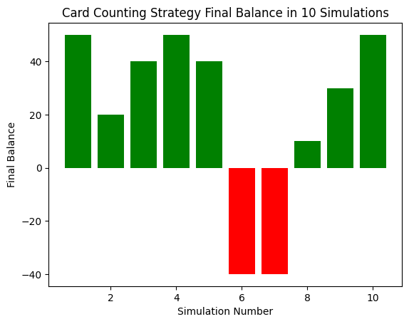

This project is a GUI simulation of a game of blackjack. The game has 3 options: basic strategy, advanced strategy, and advanced strategy with card counting.
Basic strategy: The player holds when their hand is greater than or equal to 17, hits otherwise.
Advanced Strategy: The player's decisions are based off the following probability table (credit: Wikipedia.com)

Card Counting: The Hi-Low strategy is used to count the cards. High cards, with a value of 17 or greater, are considered "high cards", while cards that are 6 or lower are considered "low cards".
When a "low card" goes out, you increase the count by 1, and when a high card goes out, you decrease the count by 1.
This "running count" is then used to determine whether the player should bet high or low.
Some statistics calculated using the simulator
Chance of player win given the first card and strategy used:


Final balances based on the strategy used:


